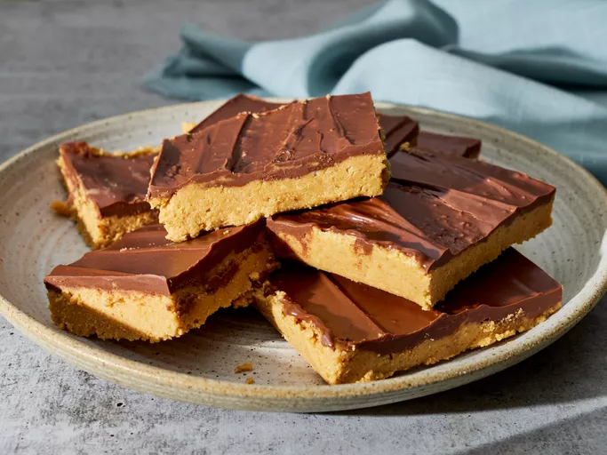

Peanut Butter Bars

Description
These peanut butter bars are rich, creamy squares that taste like peanut
butter cups, topped with smooth chocolate and ready to slice after a quick
chill.
Ingredients
- 2 cups graham cracker crumbs
- 2 cups confectioners' sugar
- 1 cup butter or margarine, melted
- 1 cup peanut butter
- 1 ½ cups semisweet chocolate chips
- 4 tablespoons peanut butter
Directions
- Gather all ingredients.
-
Mix together graham cracker crumbs, confectioners’ sugar, butter or
margarine, and 1 cup peanut butter in a medium bowl until well-blended.
- Press evenly into the bottom of an ungreased 9x13-inch pan.
-
Place chocolate chips and 4 tablespoons peanut butter in a
microwave-safe bowl. Microwave on high, stirring every 15 seconds, until
smooth.
- Spread mixture over crust.
- Refrigerate for at least 1 hour before cutting into 12 squares.